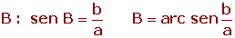
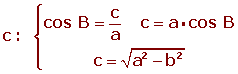
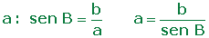
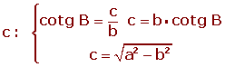

Resumen de trigonometría I
Resumen de trigonometría I
- Razones trigonnométricas
- Razones de cualquier ángulo
- Signo de razones
- Resolución de triángulos rectángulos
Razones trigonnométricas
Para medir ángulos se utilizan las siguientes unidades:
1 Grado sexagesimal (°) :
Si se divide la circunferencia en 360 partes iguales, el ángulo central correspondiente a cada una de sus partes es un ángulo de un grado (1°) sexagesimal.
Un grado tiene 60 minutos (') y un minuto tiene 60 segundos ('').
2 Radián (rad):
Es la medida de un ángulo cuyo arco mide un radio.
Razones trigonométricas:
1 Seno
Seno del ángulo B: es la razón entre el cateto opuesto al ángulo y la hipotenusa.
2Coseno
Coseno del ángulo B: es la razón entre el cateto contiguo al ángulo y la hipotenusa.
3 Tangente
Tangente del ángulo B: es la razón entre el cateto opuesto al ángulo y el cateto contiguo al ángulo.
4 Cosecante
Cosecante del ángulo B: es la razón inversa del seno de B.
5 Secante
Secante del ángulo B: es la razón inversa del coseno de B.
6Cotangente
Cotangente del ángulo B: es la razón inversa de la tangente de B.
Razones trigonométricas de cualquier ángulo
Se llama circunferencia goniométrica a aquélla que tiene su centro en el origen de coordenadas y su radio es la unidad. En la circunferencia goniométrica los ejes de coordenadas delimitan cuatro cuadrantes que se numeran en sentido contrario a las agujas del reloj.
El seno es la ordenada.
El coseno es la abscisa.
-1 ≤ sen α ≤ 1
-1 ≤ cos α ≤ 1
Signo de razones trigonométricas
1 Razones trigonométricas de los ángulos de 30º y 60º
2 Razones trigonométricas del ángulo de 45º
3 Razones trigonométricas de ángulos notables
4 Relaciones trígonométricas fundamentales
sen2 α + cos2 α = 1
sec2 α = 1 + tg2 α
cosec2 α = 1 + cotg2 α
5 Ángulos complementarios
6 Ángulos suplementarios
7 Ángulos que se diferencian en 180°
8 Ángulos opuestos
9 Ángulos negativos


10 Ángulos mayores de 360º

11 Ángulos que difieren en 90º ó π/2 rad

12 Ángulos que suman en 270º ó 3/2 π rad
13 Ángulos que difieren en 270º ó 3/2 π rad
Resolución de triángulos rectángulos
1 Se conocen la hipotenusa y un cateto.



2 Se conocen los dos catetos.


3 Se conocen la hipotenusa y un ángulo agudo.



4 Se conocen un cateto y un ángulo agudo.